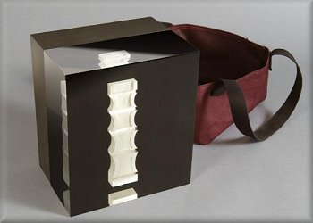

Bona Fide DEXA Phantom

| Stock # | Description | Price | |
|---|---|---|---|
| 026 | Bona Fide DEXA Phantom (BFP) | $5,842.46 | |
Bio-Imaging's "Bona Fide Phantom" (BFP), is a quality control tool for Dual-Energy X-ray Absorptiometry (DEXA) instruments, which features an acrylic-embedded calcium hydroxyapatite (CHA) step-wedge. Advanced design features make it the best choice for assessing DEXA instrument stability. You can successfully use the BFP on all mainstream DEXA instruments.
The BFP offers a range of densities (0.7 - 1.5 g/cm2), to verify instrument function over the clinically relevant range, not just at a single, "healthy" BMD. Linearity of BMD over the clinically range is critical for full instrument evaluation. The phantom uses a CHA insert for direct assessment of bone density accuracy. The CHA insert is compliant with FDA guidelines for cross-calibration phantoms for clinical trials. Each insert is machine processed, guaranteeing manufacturing precision.
The BFP is cast in acrylic and comes with its own carrying case for easy handling. The tote remains on the phantom during scanning and does not affect BMD readings, allowing rapid placement and removal for the phantom from the bed.
The BFP offers a range of densities (0.7 - 1.5 g/cm2), to verify instrument function over the clinically relevant range, not just at a single, "healthy" BMD. Linearity of BMD over the clinically range is critical for full instrument evaluation. The phantom uses a CHA insert for direct assessment of bone density accuracy. The CHA insert is compliant with FDA guidelines for cross-calibration phantoms for clinical trials. Each insert is machine processed, guaranteeing manufacturing precision.
The BFP is cast in acrylic and comes with its own carrying case for easy handling. The tote remains on the phantom during scanning and does not affect BMD readings, allowing rapid placement and removal for the phantom from the bed.